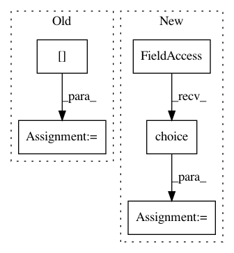

71a7b91abfd37da9a024e4106fbde8646b524ad7,scripts/radio_util.py,Generator,_read_chunck,#Generator#,33
Before Change
print("Number of files used: %s"%len(files))
def _read_chunck(self):
idx = self.idxs[self.iter]
with h5py.File(self.files[self.file_idx], "r") as fp:
sl = slice((idx*self.nx), ((idx+1)*self.nx))
data = fp["data"][:, sl]
rfi = fp["mask"][:, sl]
After Change
def _read_chunck(self):
with h5py.File(self.files[self.file_idx], "r") as fp:
nx = fp["data"].shape[1]
idx = np.random.choice(np.arange(nx/self.nx).astype(np.int))
sl = slice((idx*self.nx), ((idx+1)*self.nx))
data = fp["data"][:, sl]
rfi = fp["mask"][:, sl]
In pattern: SUPERPATTERN
Frequency: 3
Non-data size: 5
Instances
Project Name: jakeret/tf_unet
Commit Name: 71a7b91abfd37da9a024e4106fbde8646b524ad7
Time: 2016-08-19
Author: jakeret@phys.ethz.ch
File Name: scripts/radio_util.py
Class Name: Generator
Method Name: _read_chunck
Project Name: tomgoldstein/loss-landscape
Commit Name: 749438fd8b7ffc29e78d042473cb00fda595d937
Time: 2018-12-27
Author: tomg@cs.umd.edu
File Name: dataloader.py
Class Name:
Method Name: load_dataset
Project Name: rushter/MLAlgorithms
Commit Name: cd6689c12ac4db6489116147b50dfda73e356379
Time: 2019-01-07
Author: mimifasosofamire1123@gmail.com
File Name: mla/kmeans.py
Class Name: KMeans
Method Name: _choose_next_center